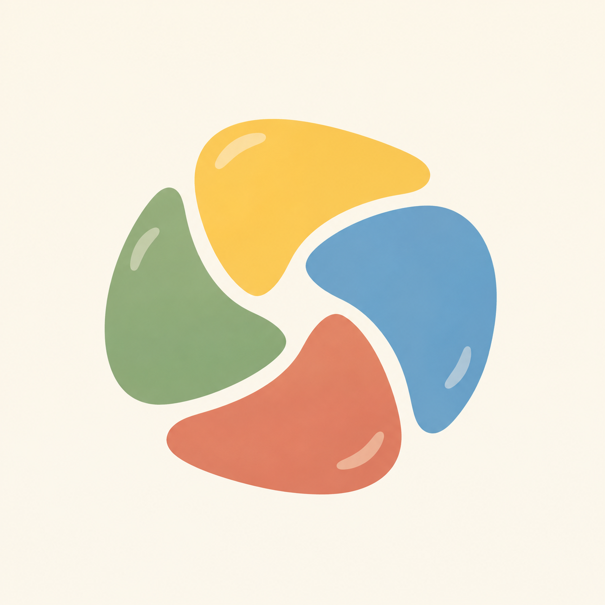
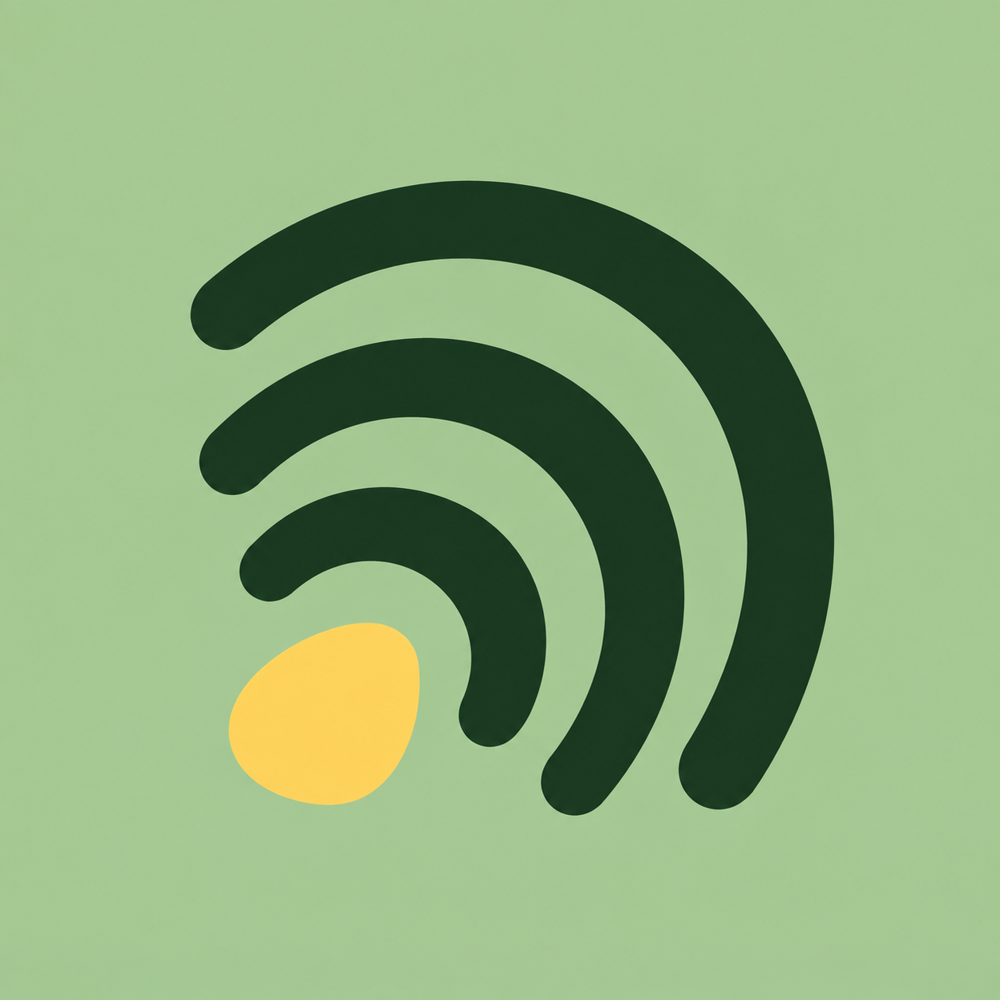
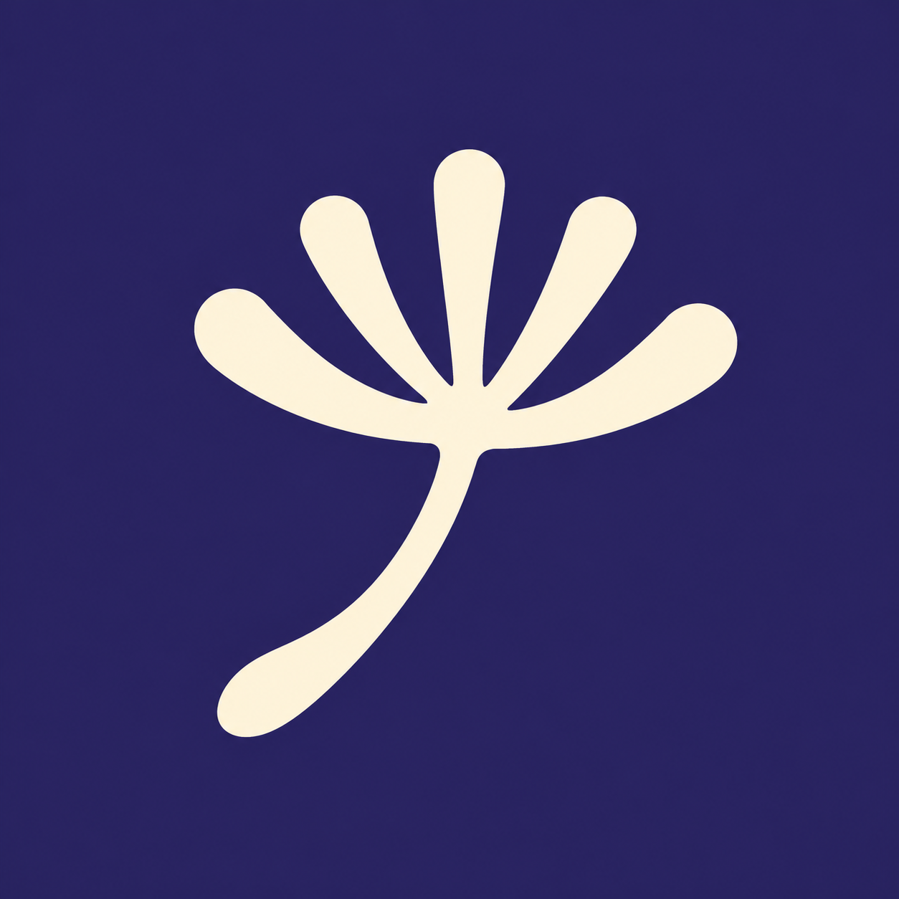
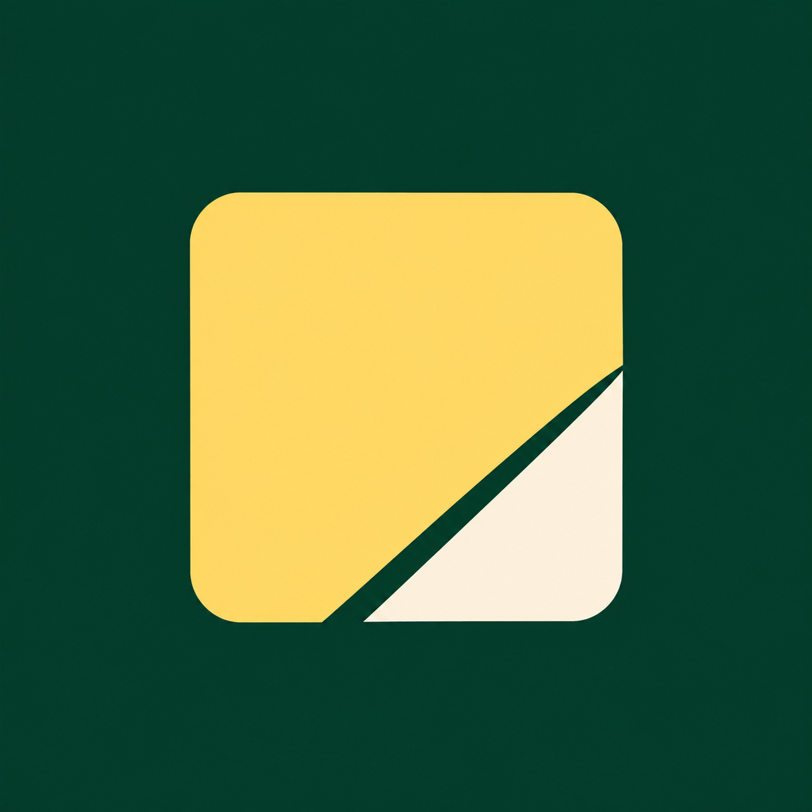
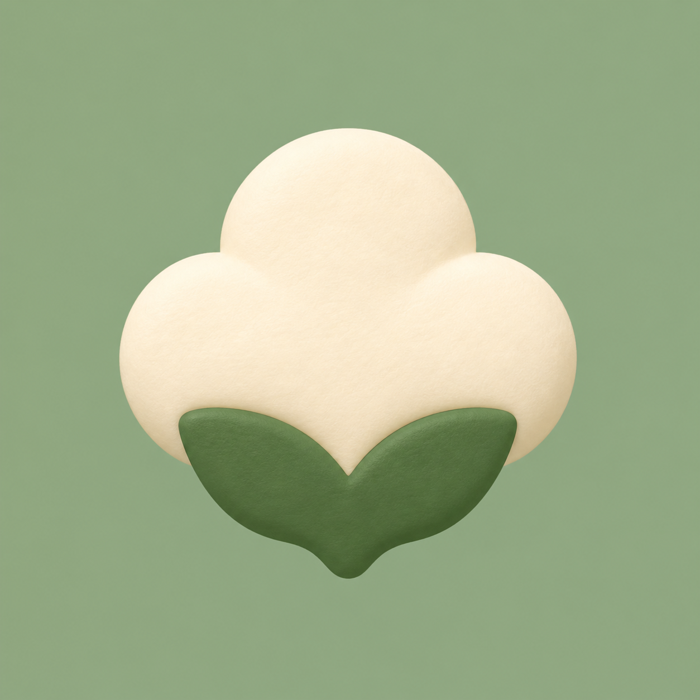

Wispel 앱 아이콘 시안
Mosaic 화면 보기 ↗작은 아이콘으로 홈 화면에서의 인상을 비교해 보세요. 각 시안을 누르면 원본이 열립니다.
01깃결

02모자이크

03잔물결
04겹친 창
05바람 W
06바람종

07홀씨
08이어달리기

09접은 쪽지

10솜방울
제작 프롬프트 · ImageGen
Use case: logo-brand. Create one square full-bleed mobile app launcher icon artwork for Wispel, Korean personal utility for gentle notifications moving between devices. Its approved UI is Mosaic (warm ivory, butter yellow, sage, blue, muted coral). Modern, distinctive identity design. Center one sophisticated, optically balanced symbol covering about 62% of the canvas, clearly recognizable at 32px. Exact square edge-to-edge colored background, clean silhouettes with a few thick features. No outer border, no rounded-square frame, no label, no captions, no number, no presentation sheet, no mockup, no shadow cast outside canvas.
- A single ivory feather with three confident, broad carved cuts bending diagonally upward on a deep spruce-green field. Flat print-like silhouettes, elegant and quiet.
- Four chunky asymmetric ceramic mosaic tesserae make one compact pinwheel with a subtle central negative-space lozenge. Butter yellow, muted blue, sage and terra cotta on an ivory field. Tiny low-relief highlights only.
- Top-down view of three spare, offset, thick concentric open arcs around a single buttery-yellow signal pebble. Modern cut-paper geometry, pale sage field, dark forest ink.
- Two offset overlapping notification cards reduced to a bold single glyph, revealing a small square of light where they overlap. Deep cobalt field, warm ivory and muted periwinkle. Avoid text lines and ellipses.
- A single broad sculptural ribbon gently folding into a clear custom lowercase w monogram. Forest green ink on warm butter yellow, strong serif-like tapered terminals. Only the w is lettering.
- Compact abstract hanging wind chime, two softly rounded dark ceramic bars of differing lengths suspended beneath one mint semicircle, a small solid wind sail. Warm coral pink field, charming Japanese modernist silhouette.
- A drifting dandelion seed stylized into a bold, iconic fan of six short rounded spokes, leaning on one curved tapered stem. Cream seedmark on muted dark indigo. Broad shapes.
- Two offset bold opposing brackets with diagonally cut ends creating a single relay passage, small orange square signal in center gap. Modern Swiss transit symbol, blue ink and coral accent on pale ice blue.
- A single compact origami folded note with lifted triangular corner. Simple two-tone folded planes in butter and bone with forest-green crease on a deep green background. Distinct square, not a paper airplane.
- A very simple tactile ivory cotton puff with three soft lobes perched above a single geometric dark sage leaf, on desaturated sage-green field. Stylized matte embossed clay, soft light, one uninterrupted bold silhouette, no photoreal fibers.